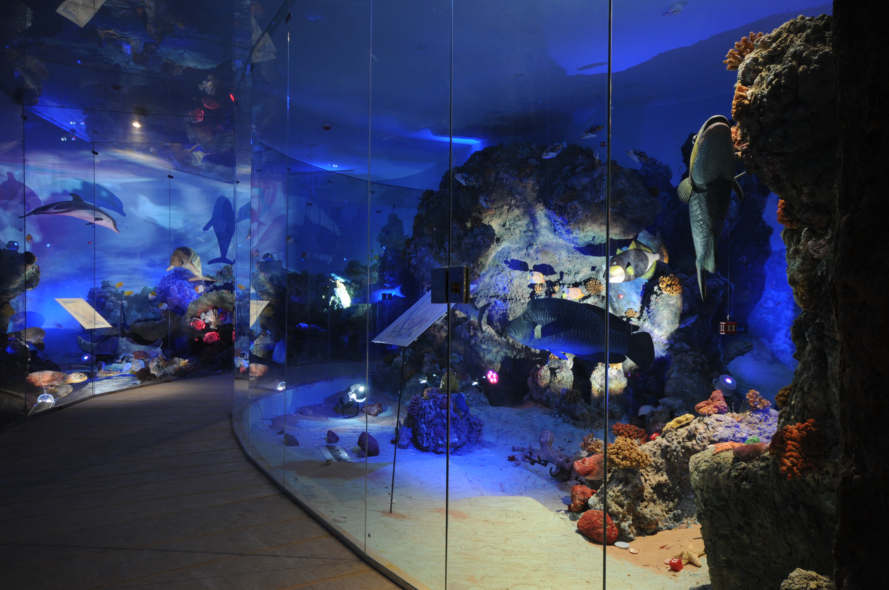
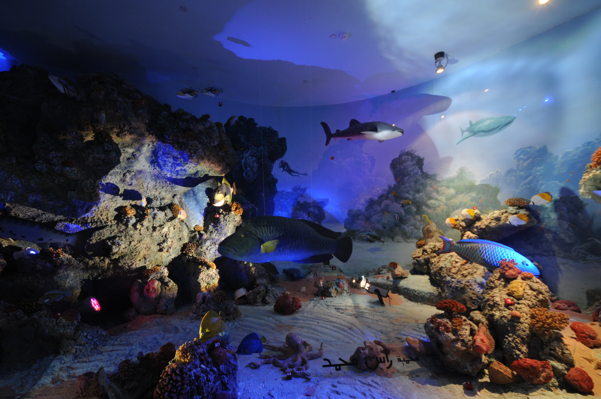

Museums & Exhibitions · Artistic & Sculptural Works
Sinai Diorama for Biodiversity
An entire natural world built by hand — coral reefs, estuary waters and desert habitats — created for Egypt's environmental museums in Sharm El-Sheikh.
All Projects
Museums & Exhibitions · Artistic & Sculptural Works
An entire natural world built by hand — coral reefs, estuary waters and desert habitats — created for Egypt's environmental museums in Sharm El-Sheikh.
All ProjectsWithin the resort line of Sharm El-Sheikh, the Ministry of State for Environmental Affairs developed a district of environmental museums and visitor attractions. At its heart stands the Sinai Diorama for Biodiversity — a museum where Egypt's natural habitats, from Red Sea coral reefs to desert mountains, were recreated entirely by hand.
Cairo International for Decoration and Construction was entrusted with the design and execution of the museum's artistic and sculptural content: the animal dioramas, the artificial coral-reef environments, the hand-sculpted rockwork, and the finishes of the museum's distinctive bronze-surfaced building.
In 2007, the Ministry of State for Environmental Affairs commissioned the Sinai Diorama for Biodiversity as the first of its environmental museums in Sharm El-Sheikh — a 2,000 m² facility inside the city's resort line, delivered within a budget of EGP 4 million over two years.
The brief was unusual for a construction company: not walls and floors, but a complete natural world — living environments for taxidermy and sculpted animals, water features, and exhibition spaces that would let visitors walk through Egypt's ecosystems.
Our team delivered the project as designer, supervisor, and executor — from the artistic concepts to the last square metre of hand-sculpted rockwork.


The museum's ground floor is an estuary exhibition hall built around twelve water pools, while a free exhibition hall adds five more. At their centre lies an integrated simulation of a Red Sea coral reef — sculpted rockwork, coloured lighting and aquarium environments in which the skeletons of historic creatures remain visible through glass, from inside and outside.
Visitors move along raised walkways through the habitats, with the reef and its marine life unfolding around them.




Upper floors host ten animal dioramas, each pairing mounted specimens with simulated natural habitats — desert, mountain and coastal scenes that place every animal inside its own environment.
Each habitat was built with techniques refined over years of artistic work: hand-built cement sculptural formations shaped on site, polyester and fiberglass moulds for repeated natural elements, and wood substructures carrying the complete landscape scenes.


The diorama halls live inside one of Sharm El-Sheikh's most distinctive buildings: an environmental museum structure surfaced entirely in copper and bronze. Cairo International executed all finishes of the bronze building and added a second facade that increased its height, display area, and lighting — designed, supervised, and implemented by our team.
Beside it stands Al-Arsra — a companion pavilion of roughly 500 m² under an elliptical reinforced-concrete dome finished with a sand layer and a marble beam system. Inside: a children's cinema hall, a theatre, and a five-senses display hall.


The project earned written appreciation from Dr. Hussein El-Shaboury of Shaboury & Associates — Museum Planning Consultants — for the high quality and on-schedule execution of the Biodiversity Museum Project — Towards a New Environment, delivered for the Ministry of State for Environmental Affairs and Cairo University.
Nearby, the company went on to execute the Peace & Environment Museum (2009–2010) — an outdoor exhibition hall in giant shell form with a botanical garden exhibition and Sharm El-Sheikh's first historic exhibition hall — completing an entire environmental museums district that continues to welcome visitors today.


From reef aquariums to desert dioramas, this project reflects the range of Cairo International for Decoration and Construction: artistic vision, sculptural craftsmanship, and disciplined execution.